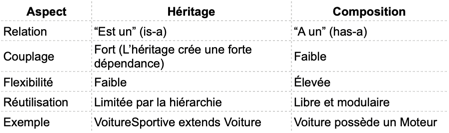
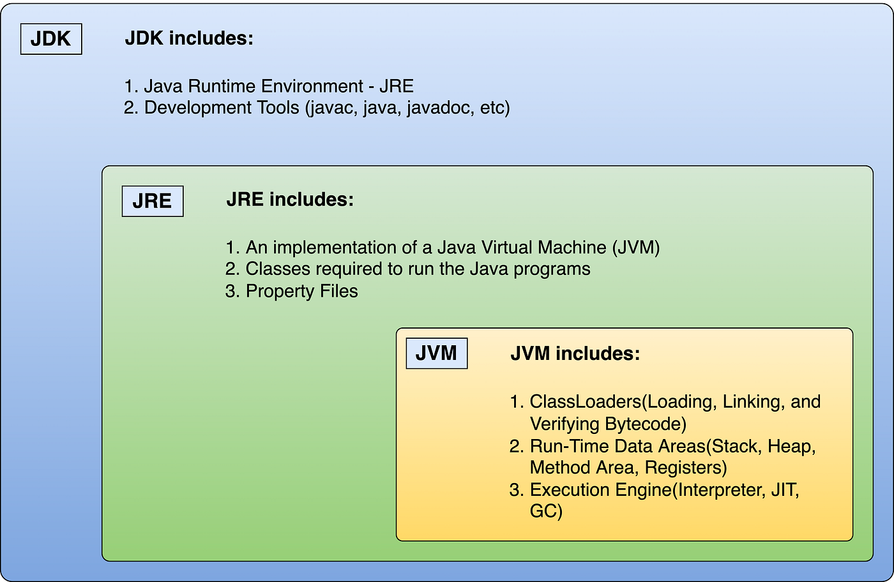
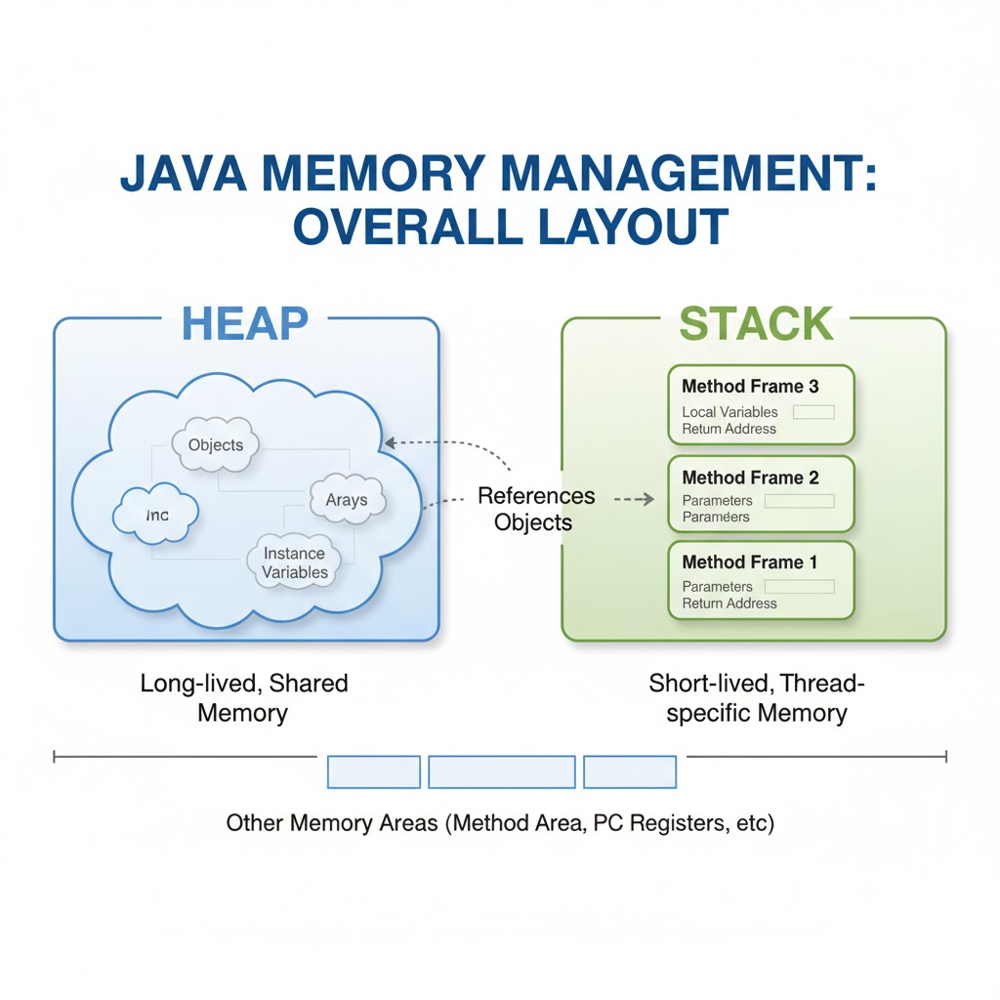

SOLID
SOLID
-
SOLID regroupe 5 principes qui facilitent la maintenabilité, les tests et l’évolution du code.
-
S – Single Responsibility Principle
- Chaque classe doit avoir une seule responsabilité,
-
O – Open/Closed Principle
- Le code doit être ouvert à l’extension, fermé à la modification.
- On ajoute de nouvelles fonctionnalités sans casser l’existant.
-
L – Liskov Substitution Principle
- Une sous-classe doit être capable de remplacer sa classe parent sans changer le fonctionnement du programme
- Garantit la cohérence des héritages.
-
I – Interface Segregation Principle
- Ce principe recommande de découper les interfaces en contrats précis.
- On évite les interfaces trop générales : chaque interface doit répondre à un besoin précis
- Il vaut mieux créer plusieurs petites interfaces spécifiques qu’une grosse interface générale.
-
D – Dependency Inversion Principle
- C’est une technique de création des objets dans laquelle les objets ne créent pas eux-mêmes leurs dépendances. Au lieu de ça, l'objet déclare ses dépendances et c’est le rôle d’un objet externe ou à un framework de fournir les dépendances concrètes à l’objet.
- Les classes doivent dépendre d’abstractions, pas d’implémentations concrètes.
- Facilite les tests et le changement de composants.
Pourquoi c’est clé SOLID en développement web ?
Dans un projet Java, .NET, Node.js ou autre, respecter SOLID permet :
- d’ajouter de nouvelles features plus rapidement
- de réduire les bugs lors des évolutions
- de faciliter les tests unitaires
Cohésion et Couplage
Cohésion et Couplage
- en POO, on cherche: une cohésion forte + un couplage faible
-
Cohésion: Les éléments d’une classe travaillent ensemble sur une seule tâche
- Le degré de dépendance et de relation logique entre les différentes parties (méthodes, attributs) d’une même classe ou d’un même module.
- Définit dans quelle mesure les éléments d’une même classe ou d’un même module travaillent ensemble pour accomplir une seule tâche.
- Assurer la responsabilité interne
-
Couplage: Les classes sont indépendantes les unes des autres
- Le degré de dépendance entre deux classes
- Mesure le degré d’indépendance entre les classes ou modules.
- Une classe découplée ne dépend pas fortement d’autres classes spécifiques.
- Faciliter la maintenance et l’évolution du code
- Le besoin principal est la cohérence forte et la simplicité
Composition over Inheritance
Composition over Inheritance
-
C’est un principe de conception orientée objet qui recommande d'utiliser la composition d’objets plutôt que d’utiliser systématiquement l’héritage entre classes.
-
Héritage : une sous-classe hérite d’une classe mère
- Composition : une classe contient une instance d’une autre classe.
Pourquoi ?
- L’héritage crée une forte dépendance entre les classes : Si on modifie une classe mère.
- Toutes les sous classes sont affectées
- On es limité par la hiérarchie (une seule classe mère).
- La composition, au contraire : offre plus de flexibilité :
- On peut changer le comportement d’un objet en changeant ses composants.
- Favorise la réutilisation du code sans contrainte hiérarchique

Fonctionnalités de Java
Java est un langage de programmation orienté objet qui présente des fonctionnalités telles que l’indépendance vis-à-vis des plateformes, la gestion automatique de la mémoire, la gestion multi-threading, le traitement des exceptions et une sécurité solide.
Quelle est la différence entre JDK, JRE et JVM
-
JDK - Java Development Kit
- Utilisé pour développer des applications Java.
- Le kit de développement Java est l'ensemble des outils dont le développeur a besoin pour développer des logiciels qui peuvent être exécutés par la JVM et le JRE.
- JDK est le composant principal de l'environnent Java et il fournit tous les outils, les exécutables et les binaires requis pour compiler, débogguer et exécuter un programme Java
- JDK contient le JRE, des API, un compilateur Java et d'autres fichiers requis pour developer d'applications Java.
- Utilisé pour développer des applications Java.
-
JRE - Java Runtime Environment
- Utilisé pour exécuter des applications Java.
- Le JRE crée la
JVMet assure que les dépendances sont disponibles pour les programmes Java.
- Le JRE crée la
- Utilisé pour exécuter des applications Java.
-
JVM - Java Virtual Machine
- JVM c'est une couche d’abstraction entre une application Java et le système d'exploitation
- Une application Java ne s'exécute pas directement dans le système d'exploitation mais dans une machine virtuelle qui s'exécute dans le système d'exploitation et propose une couche d'abstraction entre l'application Java et ce système.
- La machine virtuelle ne connaît pas le langage Java : elle ne connaît que le bytecode qui est issu de la compilation de codes sources écrits en Java.
- La machine virtuelle permet notamment :
- L'interprétation du bytecode
- L'interaction avec le système d’exploitation
- JVM c'est une couche d’abstraction entre une application Java et le système d'exploitation
ClassLoader: Est une partie du JRE qui charge dynamiquement les classes java et les interfaces dans la machines virtuelle.
WrapperClass: C'est une classe qui fournit un moyen d'utiliser les types de données primitives comme des objets , qui encapsule les types de données primitifs, on a besoin de ces classes pour garder l'objet final et immutable.


Heap Memory
- Le HEAP est une partie (portion) de la mémoire utilisé par le JVM pour stocker les objets créés par l'application.
-
Il s'agit d'une partie de mémoire partagée entre tous les threads.
- Allocation dynamique du mémoire pour les objets JAVA et les classe JRE au moment de l’exécution.
-
Les objets sont toujours créé dans l'espace du Tas(Heap) et les références dans la mémoire du pile (Stack)
- N'est pas Thread Safe :: Mémoire plaine :
OutOfMemoryError - Constant String Pool:
Le Constant String Pooln'est rien d'autre qu'une partie de stockage dans le Heap Memory (Tas) où les chaînes de caractères sont stockées.- Il s'agit d'un système similaire à l'allocation d’objets.
Stack Memory
- La STACK est une partie (portion) mémoire qui sert d'espace
de stockage aux variables déclarées par les fonctions
et les références à des objets qui se trouvent dans le HEAP
- Allocation du mémoire:
- Les références à des objets qui se trouvent dans le HEAP
- Les valeurs primitives d'une méthode
- Allocation du mémoire:
- La plupart du temps, elle est de taille fixe, déclarée lors du démarrage du thread.
- Thread-safe car chaque thread fonctionne dans sa propre pile (Stack)
Interface fonctionnelle
-
Une interface fonctionnelle est une interface qui ne contient qu'une seule méthode abstraite.
- Elle sert de modèle pour une expression lambda ou une référence de méthode.
-
L'interface fonctionnelle a été introduite dans Java 8 qui dispose une unique méthode abstraite. Qui peut prendre en charge l'expression lambda
-
Mais aussi qui peut prendre en paramètre
- Une référence vers une methode statique
- Une référence vers une methode d'instance
- Une référence vers un constructeur
- Dans Java 8, 4 interfaces fonctionnelles principales sont introduites :
- Predicate
- Consumer
- Supplier
- Function
La méthode abstraite unique représente une seule unité de calcul, ce qui la rend idéale pour les paradigmes de programmation fonctionnelle.
La programmation fonctionnelle
- La programmation fonctionnelle est un style de programmation qui traite le calcul comme l'évaluation de fonctions mathématiques.
- Elle se concentre sur l'écriture de code de manière déclarative et concise, favorisant l'immuabilité et les opérations sans effets secondaires. Avec sa prise en charge des interfaces fonctionnelles, Java apporte certains concepts de programmation fonctionnelle tout en conservant sa nature orientée objet.
- La programmation fonctionnelle est un paradigme de programmation déclaratif, traitant des opérations successivement en évitant les mutations de données et les changements d'état.
- Un enchainement d'application de fonctions
-
Un code source conçu en programmation fonctionnelle va être plus concis, plus prédictible et plus facile à tester qu'un code source programmé avec la programmation orientée objet. En revanche, il va paraître plus dense et plus compliqué à comprendre pour les développeurs plus juniors.
-
Par opposition à la programmation orientée objet, l'approche fonctionnelle de la programmation consiste à éviter les mutations de données et les changements d'états, et les effets de bords dans un code source en se basant sur les principes d'immuabilité et de composition de fonctions.
- Le code en programmation fonctionnelle n'a aucun état (à part l'état lié aux données initiales).
La programmation procédurale
- Il s'agit d'une séquence d'instructions s'exécutant les unes après les autres
Une classe abstraite et une interface
- Classe abstraite vs une Interface
- Une classe abstraite peut avoir des méthodes abstraites et non abstraites, alors qu’une interface ne peut avoir que des méthodes abstraites.
- Dans une interface les méthodes sont seulement déclarées.
Cela permet de définir un ensemble de services visibles depuis l'extérieur (API).
- Dans une interface les méthodes sont seulement déclarées.
- Une classe abstraite peut avoir des variables d’instances alors qu’une interface ne peut avoir que des constantes.
- Une classe abstraite peut avoir des méthodes abstraites et non abstraites, alors qu’une interface ne peut avoir que des méthodes abstraites.
Les classes abstraites
- Une classe abstraite est une classe dont toutes les méthodes n'ont pas été implémentées.
- Elle n'est pas instanciable, mais sert à factoriser du code.
- Une classe qui hérite d'une classe abstraite doit obligatoirement implémenter
les méthodes manquantes (qui ont été elles-mêmes déclarées «abstraites» dans la classe parente).
- Elle n'est pas obligée de réimplémenter les méthodes déjà implémentées dans la classe parente
Les interfaces
- Une interface est un peu comme une classe abstraite dans laquelle aucune méthode ne serait implémentée, les méthodes sont seulement déclarées.
- Cela permet de définir un ensemble de services visibles depuis l'extérieur (l'API : Application Programming Interface), sans se préoccuper de la façon dont ces services seront réellement implémentés.
- Une classe qui implémente une interface doit obligatoirement implémenter chacune des méthodes déclarées dans l'interface, à moins qu'elle ne soit elle-même déclarée… abstraite !
Classe abstraite ou interface ?
- Classes abtraites et interfaces ont chacune une fonction bien distincte
- Les classes abstraites visent à factoriser du code - facilite la factorisation du code.
- Les interfaces sont utilisées pour définir des contrats de service.
- Pourquoi ne pas utiliser des classes abstraites (dans lesquelles aucune méthode ne serait implémentée)
- Dans la plupart des langages actuels (c'est notamment le cas de Java, C#, PHP), il n'est possible pour une classe d'hériter que d'une seule classe parente (abstraite ou non), mais d'implémenter plusieurs interfaces.
Méthode abstraite
- Méthode abstraite:
- Est une méthode sans implémentation, définie dans une classe abstraite ou une interface, à implémenter dans la sous-classe.
Overriding vs Over-loading
- On parle de Overriding redéfinition de méthode lorsqu’une sous classe fournit une implémentation spécifique d’une méthode déjà définie dans la classe parent
- On parle de Overloading surcharge de méthode lorsqu’une classe possède plusieurs méthodes portant le même nom mais avec des paramètres différents
- Redéfinition (overriding) : une sous-classe fournit une implémentation spécifique d’une méthode déjà définie.
- Surcharge (overloading) : plusieurs méthodes du même nom mais avec des paramètres différents.
Le mot clé final
Utilisé pour :
- Déclarer une variable constante.
- Une méthode non redéfinissable (no overriding).
- Une classe non extensible (une protection contre l’héritage.)
La différence entre méthodes statiques et non statiques
- Les méthodes statique peuvent être appelées sans avoir besoin d’une instance de classe.
- Les méthodes non statique ne peuvent pas être appelées que sur un objet de la classe.
Package en Java
Un ensemble de classes et d’interfaces apparentées qui constituent un espace de noms pour les classes et les interfaces.
Collections / List
- ArrayList: Liste basée sur un tableau dynamique
- Contient des elements de meme type, il est permet un accès rapide par index.
- Array: Tableau de taille fixe, stocke des éléments du même type, il est permet un accès rapide par index.
- LinkedList – Liste chaînée, chaque élément (noeud) pointe vers le suivant et le précédent).
- Insertions et suppressions rapides mais accès par index plus lent.
- Vector : = ArrayList synchronisé (thread-safe)
- Liste dynamique basée sur un tableau, similaire à ArrayList mais synchronisée (thread-safe)
- Vector était historiquement utilisé avant Java 2 pour gérer des listes dynamiques thread-safe.
- Aujourd’hui, son usage est limité car on préfère ArrayList + synchronisation explicite, préfére ArrayList + Collections.synchronizedList() qui rend thread-safe toutes les méthodes de la liste (add(), remove(), get(), etc.).
- Chaque opération individuelle est atomique: l’itération est composée de plusieurs opérations internes:
(dans les iteration foreach)
synchronized(list)est nécessaire.
-
Stack – Sous-classe de Vector, utilisée comme Pile LIFO (Last In, First Out)
- Ancienne classe, aujourd’hui on préfére Deque (ArrayDeque) pour les piles modernes non synchronisées.
- Queue et Deque sont des interfaces spécialisées pour la gestion des files et piles,
- Queue est une interface qui étend Collection
- Deque est une interface qui étend Queue
- List est une interface pour les collections ordonnées avec accès par index.
- Queue et Deque sont des interfaces spécialisées pour la gestion des files et piles,
- Ancienne classe, aujourd’hui on préfére Deque (ArrayDeque) pour les piles modernes non synchronisées.
-
Queue = file d’attente FIFO: est une structure de données dans laquelle les éléments sont traités selon le principe FIFO – First In, First Out : le premier élément ajouté est le premier à être retiré.
- Deque: file ou liste à double extrémité (LIFO) - piles modernes non synchronisées
- implémentations : ArrayDeque, LinkedList
- Map: Est une structure clé-valeur, il stocke des associations clé-valeur avec des clés uniques.
- Set: Est une collection d’éléments uniques qui ne contient pas de doublons
HashMap et HashSet utilisent le hashCode de l’objet pour stocker et retrouver rapidement les éléments.
HashSet repose sur HashMap pour assurer l’unicité des éléments.
Deux implémentations de List :
ArrayList: basé sur un tableau dynamique, accès rapide par index.LinkedList: basé sur une liste doublement chaînée, insertions et suppressions rapides.
Vector = ArrayList synchronisé (thread-safe).
Stack : sous-classe de Vector, utilisée comme pile LIFO (Last In, First Out).
Queue et Deque : interfaces spécialisées pour files et piles.
Queue = FIFO (First In, First Out).
Deque : double extrémité (LIFO/FIFO).
Map : structure clé-valeur.
Set : collection d’éléments uniques.
- Implémentations
HashMap: non ordonnéLinkedHashMap: ordre d’insertionTreeMap: trié par cléHashSet: aucun ordre garantiLinkedHashSet: ordre d’insertionTreeSet: trié
Pile (Stack) et File d’attente (Queue)
- Une pile Stack est une structure de données LIFO (last in, first out)
- Queue est une structure de données FIFO (first in , first out)
HashMap | HashTable :
HashMapnon thread-safe, autorisenull.HashTablethread-safe, n’autorise pasnull.
HashSet | TreeSet
HashSet vs TreeSet
- HashSet est plus rapide mais non ordonné, TreeSet est plus lent mais maintient les éléments triés.
Immuabilité et thread safety :
- Un objet immuable est un objet dont l’état (les valeurs de ses attributs) ne peut pas être modifié après sa création.
- Un objet immuable ne peut être modifié après création, donc thread-safe.
- Il s'agit d'objets, qui une fois initialisés, ne peuvent plus être modifiés
- L'intérêt est d'avoir des objets qui sont par définition thread-safe qui permet d'éviter d'avoir
des blocs synchronized autour de ces objets.
- Explication: comme il ne peut pas être modifié, plusieurs threads peuvent le lire simultanément sans risque de conflit, donc pas besoin de blocs synchronized.
- Ce qui nous assure de ne pas avoir à nous soucier de problèmes de concurrence. De plus, qui dit objets immuables, dit des objets simples à créer, à utiliser et à tester.
- L'intérêt est d'avoir des objets qui sont par définition thread-safe qui permet d'éviter d'avoir
des blocs synchronized autour de ces objets.
- Un objet est synchronisé === Thread-safe ce qui signifie qu'il peut être utilisé de manière sûre dans des environnements multi-thread.
- Un objet est synchronisé === Thread-safe c'est-à-dire que dans un environnement multi-threading, il maintient les autres threads dans un état exécutable ou non exécutable jusqu'à ce que le thread actuel libère le verrou de l’objet.
String vs StringBuilder vs StringBuffer
- String est immuable, la concaténation de deux objets string implique la création d'un nouvel objet.
- String implémente l'interface Comparable
- StringBuilder est rapide et consomme moins de mémoire qu'une
Stringlors des concaténations.
- String : immuable, thread-safe
- StringBuilder : mutable, non thread-safe
- StringBuffer : mutable, thread-safe
- String immuables why ?
- Les String sont immuables principalement pour la sécurité (données non modifiables), la performance (string pool, cache hash) et le thread-safety (partage sans risque).
Optional
Optional
- Qui permet d'encapsuler un objet dont la valeur peut être null.
equals vs ==
equalsest utilisé pour comparer les valeurs de deux objets,L’opérateur ==est utilisé pour comparer les références (les adresses mémoire) de deux objets==: Utilisé pour les types primitifs (int, boolean, etc.) et les références d’objet.- Compare les références mémoire (l’adresse des objets).
- Vérifie si les deux variables pointent vers le même objet.
equals(): compare les valeurs.
equals vs == vs hashCode
Différence entre ==, equals() et hashCode()
- == Compare les références mémoire (adresses)
- equals() Compare le contenu des objets
- hashCode() Retourne un entier qui représente l'objet
- hashCode() doit être cohérent avec equals() pour garantir le bon fonctionnement des collections comme HashMap et HashSet.
Garbage Collector
- Libère automatiquement la mémoire en supprimant les objets dont le programme n’a plus besoin.
- Le Garbage Collector nettoie seulement le Heap (objets).
- La Stack est nettoyée automatiquement quand les méthodes se terminent, sans intervention du GC.
Modificateurs d’accès
- public : accessible partout
- permet d’accéder à une méthode ou variable de partout
- private : accessible uniquement dans la classe
- restreint l’accès à une méthode ou à une variable à l’intérieur de la classe
- protected : accessible dans la classe et ses sous-classes
- permet l’accès à une méthode ou à une variable à l’intérieur de la classe et de ses sous-classes.
Bloc try-catch
Utilisé pour la gestion des exceptions :
try contient le code à risque, catch gère l’exception.
Bloc statique
Bloc de code exécuté lors du chargement de la classe en mémoire.
Exceptions (checked/unchecked)
- Les exceptions checked sont vérifiées à la compilation et doivent être gérées par le programmeur
- Les exceptions unchecked ne sont pas vérifiées à la compilation et n’ont pas besoin d’êtres gérées.
Expression lambda (Fonction anonyme)
- Est une nouvelle fonctionnalité de java qui permet de créer des fonctions anonymes,
il simplifie le syntaxe de la programmation fonctionnelle en Java
- Est une implémentation d’une interface fonctionnelle
volatile
- S’applique uniquement aux variables.
- Utilisé pour partager une variable entre threads.
- Pour assurer la sécurité en multi-thread au niveau des méthodes, on utilise synchronized ou d’autres mécanismes de concurrence (locks, Atomic*, etc.).
- volatile pour variables partagées entre threads.
- synchronized pour méthodes ou blocs critiques.
Pourquoi la méthode main est-elle statique en Java ?
- La JVM appelle la méthode
main()en se basant sur le nom de la classe elle-même. pas en créant l’objet.
La méthode principale main() peut-elle être surchargée ?
- Oui, il est possible de surcharger la méthode
main(), mais seule la version standard sera utilisée comme point d’entrée du programme.
var d instance et var locale
- Variables d’instance
- Les variables d’instance sont des variables qui sont accessibles par toutes les méthodes de la classe.
- Elles sont déclarées en dehors des méthodes et à l’intérieur de la classe.
- Ces variables décrivent les propriétés d’un objet et restent liées à celui-ci
- Variables locales
- Les variables locales sont des variables présentes dans un bloc, une fonction ou un constructeur et ne sont accessibles qu’à l’intérieur de ceux-ci.
- L’utilisation de la variable est limitée à la portée du bloc
pass-by-value
Passage par valeur / référence
- En JavaScript, les types primitifs sont passés par valeur, et les objets/tableaux sont passés par référence
- Passage par valeur: On passe une copie de la valeur à la fonction
- Conséquence : Les modifications faites à cette copie n’affectent pas la variable originale.
- Passage par référence: On passe l’adresse (la référence) de la variable à la fonction.
- Conséquence : Les modifications dans la fonction affectent la variable originale.
Explain pass-by-value in Java – how does it behave with object references vs primitives?
- Java est toujours pass-by-value, mais pour les objets, on passe la valeur de la référence, ce qui peut donner l’impression d’un passage par référence.
- Types primitifs (int, double, boolean, etc.)
- Une copie de la valeur est passée à la méthode.
- Modifier cette copie n’affecte pas la variable originale.
- Références d’objets
- La méthode reçoit une copie de la référence à l’objet, pas l’objet lui-même.
- On peut modifier l’état interne de l’objet, ce qui sera visible en dehors de la méthode. mais pas faire pointer la variable originale vers un nouvel objet.
Que se passe-t-il pendant le chargement et l'initialisation d'une classe (ClassLoader → Liaison → Initialisation) ?
-
Le ClassLoader charge la classe en mémoire, puis la liaison vérifie le bytecode, enfin l'initialisation exécute les blocs statiques et assigne les valeurs aux variables statiques.
-
CHARGEMENT (Loading)
- Le ClassLoader lit le fichier .class
- Crée l'objet Class en mémoire
- LIAISON (Linking)
- Vérification du bytecode
- La mémoire est allouée pour les statics avec valeurs par défaut
- Les références sont résolues
- INITIALISATION (Initialization)
- Les variables statiques reçoivent leurs vraies valeurs
- Les blocs static{} sont exécutés
var statiques, blocs statiques et méthodes statiques
- En Java, les
variables statiquessont initialisées dans l’ordre où elles apparaissent, suivies desblocs statiquesdans leur ordre d’apparition. Les méthodes statiquesne sont pas initialisées : elles ne s’exécutent que si on les appelle.
- Les méthodes static ne peuvent pas être surchargées (overridden) en Java.
Autoboxing / Unboxing
WrapperClass: C'est une classe qui fournit un moyen d'utiliser les types de données primitives comme des objets , qui encapsule les types de données primitifs, on a besoin de ces classes pour garder l'objet final et immutable.
- autoboxing la conversion automatique d’un type primitif vers son wrapper.
- unboxing la conversion automatique du wrapper vers le primitif.
- Si une exception est levée dans un bloc static, la classe échoue son initialisation et devient inaccessible
lombok
- La librairie lombok permet :
- d'utiliser des annotations au lieu de coder
- d'éviter le codage de setters, getters, contructors, builders, equals, hashcode …
CDI
- Une spécification destinée à standardiser l'injection de dépendances et de contextes
Tests unitaires
- Éviter les regressions
- Valider le fonctionnement
- Documenter
Spring-batch est un module pour faire des traitements batch
- Permet de lire des données, les traiter et les sauvegarder JSR 222 (JAXB)
Parlez-nous du compilateur JIT.
- JIT est l’abréviation de Just-In-Time et est utilisé pour améliorer les performances pendant l’exécution.
- Le compilateur n’est rien d’autre qu’un traducteur du code source en code exécutable par la machine.
- Tout d’abord, la conversion du code source Java (.java) en byte code (.class) se fait à l’aide du compilateur
javac. - Ensuite, les fichiers
.classsont chargés au moment de l’exécution par laJVMet à l’aide d’un interpréteur, ils sont convertis en code compréhensible par la machine. - Le compilateur JIT fait partie de la JVM. Lorsque le compilateur JIT est activé,
la JVM analyse les appels de méthode dans les fichiers
.classet les compile pour obtenir un code natif plus efficace.
Il s’assure également que les appels de méthode prioritaires sont optimisés. - Une fois l’étape ci-dessus effectuée, la JVM exécute directement le code optimisé au lieu de réinterpréter le code. Cela augmente les performances et la vitesse d’exécution.
Thread en Java
Un thread est un processus léger qui s’exécute indépendamment du flux principal.
Mot clé synchronized : assure qu’un seul thread accède à un bloc de code à la fois.
ThreadLocal
- Problème: comment stocker des données qui doivent être différentes pour chaque thread sans conflits ni synchronisation complexe.
- Solution : ThreadLocal
ThreadLocalest une classe qui permet de stocker des données spécifiques à un thread.ThreadLocalpermet de stocker une valeur différente pour chaque thread, sans partager avec les autres threads- Chaque thread a sa propre copie indépendante des autres threads.
ThreadLocalcrée une copie par thread, donc chaque thread lit/écrit sa propre valeur.
ThreadLocaln’est pas une variable globale partagée.- ThreadLocal ne rend pas la variable thread-safe pour un partage global : elle n’est thread-safe que par thread.
- Solution correcte pour partage global => AtomicInteger, synchronized, ConcurrentHashMap ...
- Utilité :
- Éviter le partage de données entre threads et simplifier le passage de variables dans les appels de méthodes.
- Pour stocker des données spécifiques à un thread
Perf : STAR
Perf : STAR
-
Situation:
- Nous devions traiter des fichiers XML très volumineux conformes à la norme IEC 61850.
- Le traitement via l’API Java
JAXBpour convertir ces fichiers en objets Java et inversement était très lent, ce qui affectait la réactivité de l’application pour les utilisateurs
-
Tâche:
- Ma tâche était de diagnostiquer le problème de performance, proposer et tester des solutions afin d’améliorer le débit et la réactivité de l’application lors de l’import et de la conversion des fichiers XML.
-
Action:
- J’ai commencé par analyser l’utilisation de la mémoire et le temps de traitement
à l’aide de Spring Actuator et des outils de monitoring JVM afin d’identifier les points critiques de performance
- les points critiques, afin d’identifier les parties du code qui consommaient le plus de mémoire et prenaient le plus de temps à s’exécuter (notamment la conversion complète des fichiers XML en objets Java).
- Ensuite, j’ai mené plusieurs proofs-of-concept (POC) :
- J’ai testé l’API JAXB en utilisant le chargement par blocs avec
StAX, au lieu de charger le fichier XML complet en mémoire.
- J’ai testé l’API JAXB en utilisant le chargement par blocs avec
- J’ai commencé par analyser l’utilisation de la mémoire et le temps de traitement
à l’aide de Spring Actuator et des outils de monitoring JVM afin d’identifier les points critiques de performance
-
Résultat:
-
Grâce à ces actions:
- Le débit de traitement des fichiers XML a été significativement augmenté, et l'app est devenue beaucoup plus réactive.
-
La mémoire consommée a diminué de 40 %
Le passage du stockage de la base de données vers un NAS a allégé la charge sur la base, amélioré le stockage
Un NAS est un système de stockage connecté au réseau, qui permet de stocker et partager des fichiers entre plusieurs machines.
-
- Sur le projet, nous devions traiter des fichiers XML très volumineux conformes à la norme IEC 61850.
- Le problème, c’est que Le traitement via l’API Java
JAXBpour convertir ces fichiers en objets Java et inversement était très lent, ce qui affectait la réactivité de l’application pour les utilisateurs
- Ma tâche était de diagnostiquer le problème de performance et de proposer et tester des solutions afin d’améliorer le débit et la réactivité de l’application lors de l’import et de la conversion des fichiers XML.
- J’ai commencé par analyser
la consommation mémoireetle temps de traitementavecSpring Actuatoret des outils de monitoringJVM, afin d’identifier les parties du code qui consommaient le plus de mémoire et prenaient le plus de temps à s’exécuter (notamment la conversion complète des fichiers XML en objets Java). - J’ai fait
plusieurs POC: j’ai testé le traitement par blocs, au lieu de charger le fichier XML complet en mémoire, tout en continuant à utiliser JAXB pour la conversion.
- Au final, grâce à ces optimisations, le traitement des fichiers XML a été beaucoup plus rapide, et l’application est devenue nettement plus réactive pour les utilisateurs.
Java nouveautées
https://www.neosoft.fr/nos-publications/blog-tech/java-8-whats-new-23-date-and-time/
Java8:
- Streams: L'API Stream et Collector
- Les expressions lambda (fct anonyme)
- La classe Optional
- La programmation fonctionnelle (Interface fonctionnelle) => foreach, filter, map, reduce ...
- Api Date & Time
- L'apport technique majeur de l'API Date de Java 8 => des classes immutables
- Les principes architecturaux autour desquels a été conçu la nouvelle API Date sous les suivants :
- Immuabilité et thread safety : Toutes les classes centrales de l'API Date and Time sont immuables, ce qui nous assure de ne pas avoir à nous soucier de problèmes de concurrence. De plus, qui dit objets immuables, dit des objets simples à créer, à utiliser et à tester.
- Chaînage : les méthodes chaînables rendent le code plus lisible et elles sont aussi plus simples à apprendre. Quant aux méthodes de type factory (par exemple: now(), from(), etc.) elles sont utilisées en lieu et place de constructeurs.
- Clareté : Chaque méthode définie clairement ce qu'elle fait. De plus, hormis dans quelques cas particuliers, passer un paramètre nul à une méthode provoquera la levée d'un NullPointerException. Les méthodes de validation prenant des objets en paramètre et retournant un booléen retournent généralement "false" lorsque null est passé.
- Extensibilité : Le design pattern Stratégie utilisé à travers l'API permet son extension en évitant toute confusion. Par exemple, bien que les classes de l' API soient basées sur le système de calendrier ISO-8601, nous pouvons aussi utiliser les calendriers non-ISO – tel que le calendrier Impérial Japonais – qui sont inclus dans l'API, ou même créer votre propre calendrier.
Java 9
- Modules, var
- API et outils: des fabriques (factory pour des collections immutables: List.of(), Set.of(), Map.of().
Java 11
-
JDK 11 embarque un certain nombre de nouvelles classeset méthodes intégrées à des modules déjà existants:
###### java.lang.String : boolean isBlank(): retourne true si le String est vide ou n'est composé que de whitespaces, sinon false. Stream lines(): retourne un stream des lignes extraites du String. ###### New File Methods We can use the new *readString* and *writeString* static methods from the Files class: Path filePath = Files.writeString String fileContent = Files.readString(filePath); ###### (var keyword) in lambda parameters was added in Java 11. -
The new HTTP client from the java.net.http package was introduced in Java 9. It has now become a standard feature in Java 11.
-
Running Java Files
- A major change in this version is that we don't need to compile the Java source files with javac explicitly anymore:
Java 17
-
Type (classes) Record (Introduits en Java 16 (finalisés dans Java 17) )
- Un record permet de créer facilement des objets immutables
- Simplifient la création de classes immuables et de DTO.
- Une "record class”" = un type spécial de classe conçu pour contenir des données immuables avec moins de code
-
Pattern matching Extraire directement des valeurs typées sans cast explicite,
- Cette fonctionnalité concerne le mot-clé instanceof, qui permet de vérifier le type d'un objet.
- Avec la nouvelle syntaxe, l'objet est créé au moment de l'appel à instanceof (Plus besoin de cast manuel) et il est possible de faire directement appel à ses propriétés par la suite, sans avoir à passer par un objet temporaire.
-
Nouveau Switch
- Il est possible de retourner une valeur grâce à un switch, pas besoin de
break
- Il est possible de retourner une valeur grâce à un switch, pas besoin de
-
G1 + ZGC améliorés
G1est devenu plus stable avec une meilleure gestion des pauses, il garde des pauses courtes.ZGCminimise les pauses même si elle utilise beaucoup de mémoire (heap)java -XX:+UseG1GC -jar app.jar
java -XX:+UseZGC -jar app.jar
- Java propose plusieurs garbage collectors pour s’adapter à différents besoins :
- G1 est conçu pour un équilibre entre performance et pauses courtes
- ZGC garbage collector concurrent, éviter que l’application s’arrête longtemps pour le GC, même si elle utilise beaucoup de mémoire, il peut gérer des heaps très grands
-
Sealed classes (Présentes dès Java 17 (finalisées en 21).)
- Permettent de restreindre quelles classes peuvent hériter d’une classe mère
-
Blocs de texte
- Il est possible de créer des blocs de texte de façon simple.
Java 21
-
Record Pattern (JEP 440)
- Lire / extraire les données d’un record (Une syntaxe de déstructuration)
- Précédemment (Java 19) en phase de preview, cette fonctionnalité est désormais officielle
- Utilise le Pattern matching (instanceof / switch)
-
Pattern matching
- Étendu aux switch
- Le switch est entièrement modernisé, il gère les types, les patterns,
les guards when, les valeurs null, et les record patterns.
- les guards when on peut ajouter une condition (guard clause)
-
Threads Virtuels
- Les
threads Javaétaient liés à un thread système → lourds et coûteux à créer - Avec
Virtual Threads, Java crée des milliers (voire millions) de threads légers gérés par la JVM -
Un
Virtual Threadsest un thread léger géré par la JVM, beaucoup plus léger qu’un thread classique.- Un thread classique est un fil d’exécution lourd géré par le système d’exploitation, limité en nombre.
-
Virtual Threads utilisent une pile beaucoup plus petite et la JVM partage l’exécution de plusieurs virtual threads sur les threads OS disponibles.
Exemple
Imagine un
thread OS comme un serveuret lesvirtual threads comme des clients:Le
serveurpeut servir des milliers declientsen partageant son temps de manière efficace. -
Depuis sa version 19, Java a introduit le projet Loom, et avec lui, la promesse d'une programmation asynchrone non bloquante, tout en restant dans un paradigme impératif.
- Contrairement au Thread Plateforme qui est associé à un unique Thread de l'OS
Un Thread Virtuel n'est associé à aucun Thread.
Au moment de son exécution, la JVM va choisir un Thread porteur Carrier Thread et y affecter le Runnable.
Lorsque le code fait une opération bloquante, il va être détaché du Thread porteur (Yield) et son état va être stocké en RAM.
Le thread porteur est alors libre d'exécuter le code d'un autre Thread virtuel (via une Continuation).
-
Thread plateforme = thread classique : c’est un fil d’exécution «lourd» géré par le système d’exploitation.
- Chaque thread plateforme correspond à un thread OS, avec toute la surcharge associée (pile mémoire, contexte, planification…).
- Leur nombre est limité par le système.
-
Virtual thread = thread léger géré par la JVM.
- Ils ne correspondent pas directement à un thread OS, mais sont multiplexés sur des threads plateformes existants.
- Cela permet d’en créer des milliers voire des millions sans saturer le système.
- JVM partage l’exécution de plusieurs virtual threads sur les threads OS disponibles.
- Les
-
G1 et ZGC encore plus performants (moins de pause, plus de stabilité)
Stream | les bonnes pratiques
TODO - Stream les bonnes pratiques
- L'API Stream : est un pipeline qui permet de traiter des collections de données de manière déclarative
- Immuables → chaque opération retourne un nouveau Stream.
- Opérations terminales (déclenchent l’exécution)
- forEach()
- collect()
- reduce()
- count()
Interface fonctionnelle
TODO Interface fonctionnelle
- 4 interfaces fonctionnelles principales sont introduites :
- Predicate
- Consumer
- Supplier
- Function